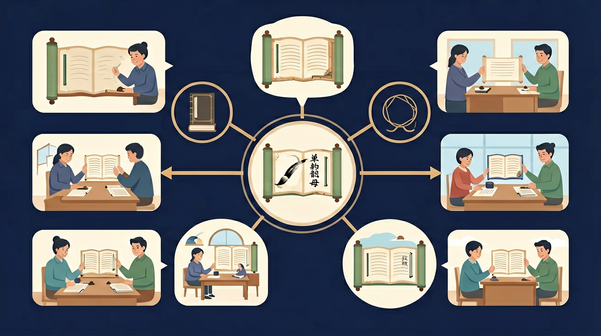

❓ 为什么a、o、e长得不一样，发音却都是单韵母？
❓ 单韵母发音时嘴巴不动，那怎么区分a和o呢？
❓ i和ü都有小点，它们是不是双胞胎呀？
学完这一课，这些问题你都能自信地回答。
单韵母 a o e i u ü 一共有几个？
哪个单韵母发音时嘴巴最圆？
i和ü的主要区别是？
单韵母是由一个元音构成的韵母，小学先学 a、o、e、i、u、ü 六个。发准单韵母，口型稳定，是拼读所有音节的根基，也影响整体发音是否清晰。
每个单韵母对准口型：a 张大、o 圆唇、e 扁嘴等，对着镜子练。再带四声朗读，最后与声母相拼。ü 的两点在 j q x 后省略规则要另外记清。
常见误区：常见误区是口型滑动把单韵母读成复韵母，或 ü 与 u 混淆。应对镜练口型并对比听辨。
下列属于单韵母的是？
把六个单韵母配上四声做成手势操，边做边读。低年级在游戏中把单韵母夯实。
And：学生已会读a、o、e等简单发音
But：容易混淆单韵母与声母的区别
Therefore：明确单韵母‘独立发音’的核心特征
单韵母就像拼音里的‘独行侠’，能自己发出响亮的声音！比如‘a’就像医生检查喉咙时说的‘啊——’，不需要其他字母帮忙就能拖长音（示范3秒）。记住：单韵母有6个——a、o、e、i、u、ü，它们都是‘一口气读完’的小能手。
🌍 看牙医时张大嘴说‘啊’（a），公鸡打鸣‘喔喔喔’（o），惊讶时‘咦？’（i），这些全是单韵母在生活中的声音！
下面哪个是单韵母？
And：知道单韵母能独立发音
But：不清楚发音时嘴巴形状不同
Therefore：建立口型与发音的对应关系
单韵母的嘴巴会变魔术！发‘a’时嘴巴张大能放两个手指（示范），‘o’像圆圆的鸡蛋（圈起嘴唇），‘u’要把嘴唇嘟成小喇叭。特别提醒：‘i’要嘴角拉开微笑，而‘ü’要像吹口哨一样撅嘴（配合手势演示）。
🌍 吃苹果时说‘啊呜’（a-u），吹泡泡时‘噗——’（u），模仿火车‘呜呜’声都是在练习单韵母口型！
发哪个音时嘴唇最圆？
And：能正确发出单韵母本音
But：对声调变化不敏感
Therefore：掌握单韵母+声调的完整发音
单韵母戴上声调帽子就会变身！比如‘a’：一声‘ā’像飞机平飞（手势→），二声‘á’像疑问‘啊？’，三声‘ǎ’像过山车先下后上，四声‘à’像生气跺脚。重点：ü遇到声调要去两点（举例ǖ→ǘ→ǚ→ǜ）。
🌍 妈妈惊讶‘á？你作业呢？’，小狗疼了‘ǎ！’，弟弟耍赖‘à！我就要！’这些都是带调的单韵母。
‘马’的韵母是三声，该选？
And：已掌握单韵母单独发音
But：在词语中定位韵母有困难
Therefore：培养音节分解能力
单韵母最爱藏在字里交朋友！比如‘爸（bà）’里藏着‘a’，‘米（mǐ）’里有‘i’。秘诀：先慢读字（示范b...à），拖长音找韵母。特别注意‘女（nǚ）’的韵母是‘ü’，虽然它戴了声调帽子看不见两点啦！
🌍 拍手念‘我-爱-吃-鱼（wǒ ài chī yú）’，每个字韵母分别是o、a、i、ü，多有趣！
‘哭（kū）’的韵母是？
用镜子观察发a/o/e时嘴巴从大到小的变化
单韵母就像拼音积木的底座，其他音都站在它上面
i和ü是戴帽姐妹（小点像帽子），u是光脑袋
动画展示：a像医生检查的压舌板，o像圆圆的小嘴
用单韵母密码解锁'阿婆鹅衣屋鱼'六个魔法咒语
关于单韵母ü的说法正确的是？
观察发a、o、e、i、u、ü时镜子里的嘴型变化
✅ 做吹笛子动作强调ü的撮口
💡 忽视头上两点发音差异
✅ 手势模拟刀刃划断尾音
💡 受汉字注音影响
口诀：嘴巴张大aaa，嘴巴圆圆ooo，嘴巴扁扁eee
类比：单韵母像不同形状的饼干模具，压出不同嘴型
先独立作答，再点选项查看对错与错因。
小鱼吐泡泡时会发出哪个单韵母的音？
下面哪个单韵母的声调标注正确？
医生检查喉咙时让我们发哪个音？
单韵母____戴帽子时要先摘掉小圆点
答案：i
i加声调时要去掉点再标调
听到'公鸡打鸣'应该选择单韵母____
答案：o
公鸡叫声'喔喔喔'含o音
点击节点跳转到对应章节；可切换布局。